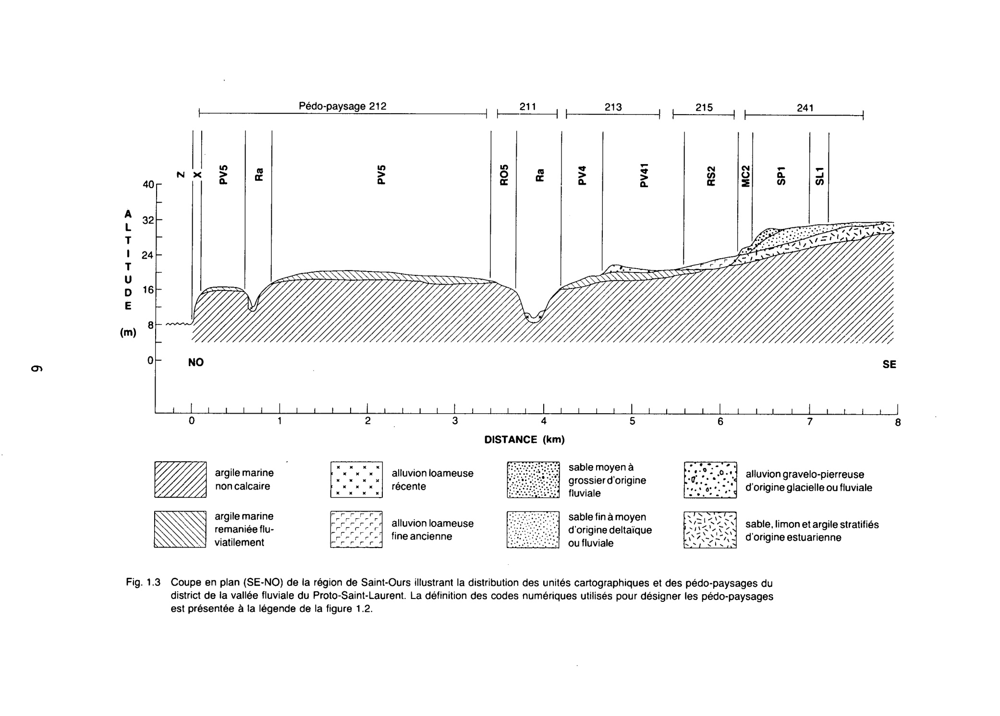

Identification & Caractéristiques Générales
Les sols de la série Saint-Laurent se sont développés sur des dépôts argileux fins, souvent stratifiés, reposant en placage sur un substrat d'argile très fine d'origine marine ou alluvionnaire, parfois neutre à alcalin. Ce matériel parental s'est mis en place dans les basses terres, principalement sur les terrasses argileuses inférieures, en bordure du fleuve Saint-Laurent, de la rivière Richelieu et dans les îles environnantes. La topographie associée est plane à légèrement ondulée, caractérisée par des pentes faibles variant généralement de 1 à 5 %.
Le profil morphologique se caractérise par une profondeur de solum de 50 à 90 cm et présente, à l'intérieur de la zone de contrôle de 120 cm, un lit contrastant loameux, limoneux ou sableux d'une épaisseur de 5 à 40 cm. Le contenu en fragments grossiers est nul dans l'ensemble du profil, à l'exception de ce lit intercalaire qui peut en contenir de 1 à 10 % en volume. Ces sols sont profonds et mal drainés, démontrant des indices de gleysation (gley) observés entre 0 et 30 cm de profondeur en raison d'une infiltration et d'un égouttement lents. La texture des horizons supérieurs varie de l'argile limoneuse au loam limono-argileux ou au loam, affichant une réaction variant de fortement acide à neutre, tandis que les carbonates se situent généralement au-delà de 120 cm de profondeur.
Sur le plan agronomique, ces sols sont intensivement mis en valeur pour les grandes cultures et les productions fourragères, offrant un éventail cultural supérieur à celui de sols argileux massifs comparables, bien que leur potentiel ionique soit moindre. Leur utilisation optimale requiert la mise en place d'un système de drainage combiné, souterrain et superficiel, afin de pallier le mauvais drainage naturel et d'accélérer l'évacuation de l'eau, les lisières poreuses interstratifiées pouvant faciliter l'écoulement latéral. De plus, la nature stratigraphique de ces profils engendre une sensibilité marquée à l'érosion en nappe le long des fossés, nécessitant des pratiques adéquates de travail du sol et, le cas échéant, des interventions de chaulage pour corriger l'acidité de surface.
Caractères Distinctifs & Morphologie Génétique (Comté de Rouville — Page 270)
- Modérée : agrégats bien formés et possédant des caractères distinctifs, moyennement durables et évidents.
- Forte : agrégats durables qui adhèrent faiblement les uns aux autres résistant au déplacement et se séparant lorsque le sol est perturbé.
- Amorphe (massif) : masse cohérente sans orientation distincte de lignes naturelles de faiblesse.
- SUBSTRATUM : Réfère à la partie du sol se trouvant sous le solum.
- TALUS : Amoncellement meuble et incliné de fragments de roches accumulés au pied d'une falaise ou d'une pente abrupte.
- TAXON : Terme général désignant toute classe appartenant à l'un ou l'autre des niveaux de catégories d'un système taxonomique de classification. On appellejonctions de taxondes sols qui répondent approximativement, mais pas tout à fait, aux critères d'une série. Au lieu de former une unité cartographique spécifique, ces sols sont associés à la série de sols dont ils divergent quelque peu.
- TEINTE : VoirMUNSELL (CODE DE COULEUR)
- TERRASSE : Plaine généralement étroite, presque plate, bordant une rivière, un lac ou une mer.
- TEXTURE : Proportions relatives des différentes fractions granulométriques (sable, limon, argile) dans une masse de sol.
Classification Taxonomique & Environnement Pédologique
| Ordre Pédologique | Gleysolique |
|---|---|
| Grand Groupe (SCSS) | Gleysol humique |
| Sous-Groupe Taxonomique | Gleysol humique orthique |
| Famille Pédologique | Argileuse, mixte argileux, neutre |
| Mode de Dépôt Parental | Fluviatile sur marin |
| Classe de Drainage Naturel | Mal drainé |
| Régime Thermique & Humidité | Doux / Perhumide |
Description Morphologique du Profil Type
Séquences génétiques des horizons pédologiques caractérisant le profil type représentatif de la série Saint-Laurent :
Profil cultivé (agricole) — Comté de Chambly
✓ Source : Comté de Chambly — Page 114Couleur Munsell : Non précisée
Structure & Consistance : Polyédrique subangulaire
Description morphologique : Loam limono-argileux; brun foncé (10YR 3,5/3); structure polyédrique subangulaire, fine, faible-ment à modérément développée; consistance friable; modérément poreux; limite nette, régulière; réaction moyennement acide.
Couleur Munsell : 5Y 4/2 (matrice), 10YR 4/6 (marbrures)
Structure & Consistance : Polyédrique subangulaire
Description morphologique : Argile limoneuse; brun grisâtre foncé (2,5Y 4/2); marbrures brun jaunâtre foncé (10YR 4/6), nombreuses, moyennes, marquées; structure polyédrique subangulaire, fine, faiblement développée; consistance ferme, peu poreuse; limite nette, régulière; réaction faiblement acide.
Couleur Munsell : 5Y 4/1 (matrice), 10YR 5/8 (marbrures)
Structure & Consistance : Polyédrique angulaire
Description morphologique : Loam limono-argileux; gris foncé à brun grisâtre foncé (2,5Y 4/1); marbrures brun jaunâtre (10YR 5/8), nombreuses, moyennes, marquées; structure polyédrique angulaire, fine, faiblement à modérément développée; consistance très friable; modérément poreux; limite nette, régulière; réaction faiblement acide.
Couleur Munsell : 5Y 4/2 (matrice), 10YR 5/6 (marbrures)
Structure & Consistance : Polyédrique à granulaire
Description morphologique : Loam limoneux; brun grisâtre foncé (2,5Y 4/2); marbrures brun jaunâtre (10YR 5/6), nombreuses, moyennes, marquées; sifs; consistance très friable; modérément poreux; limite nette, régulière; réaction faiblement acide.
Couleur Munsell : 5Y 5/2 (matrice), 5YR 4/4 (marbrures)
Structure & Consistance : Polyédrique à granulaire
Description morphologique : Argile lourde; gris olivâtre (5Y 5/2); marbrures brun foncé à brun (7,5YR 4/4), nombreuses, moyennes, marquées; massive; consistance ferme; peu poreuse; réaction neutre.
Profil cultivé (agricole) — Comté de Champlain
✓ Source : Comté de Champlain — Page 27Couleur Munsell : 10YR 4/3, 2.5Y 5/3
Structure & Consistance : Granuleuse
Description morphologique : Loam à loam sablo-argileux brun foncé (10YR 4/3) à brun gris foncé (2.5Y 5/3); structure granuleuse; pH : 5.8.
Couleur Munsell : 10YR 6/2
Structure & Consistance : Polyédrique à granulaire
Description morphologique : Loam sablo-argileux gris brun clair (10YR 6/2) avec quelques taches de rouille à la base; pH : 5.7.
Couleur Munsell : 10YR 5/2
Structure & Consistance : Polyédrique
Description morphologique : Loam argileux à argile brun gris à brun (10YR 5/2 - 5/3); structure polyédrique; présence de mouchetures de rouille; interlaminé de sables fins; pH : 6.2.
Couleur Munsell : 10YR 6/1
Structure & Consistance : Polyédrique à granulaire
Description morphologique : Argile grise (10YR 6/1); fréquemment interlaminée de sables fins; pH : 6.5.
Couleur Munsell : Non précisée
Structure & Consistance : Polyédrique à granulaire
Description morphologique : Argile grise, massive; pH : 6.8 - 7.0.
Profil cultivé (agricole) — Comté de L'assomption
✓ Source : Comté de L'assomption — Page 47Couleur Munsell : 2.5Y 5/3
Structure & Consistance : Granuleuse
Description morphologique : Argile brun grisâtre foncé (2.5Y 5/3-5/2); structure granuleuse; dure à l'état sec, plastique et collante à l'état très humide; pH 5.4 à 5.8.
Couleur Munsell : 10YR 5/1 (matrice), 2.5Y 5/2 (marbrures)
Structure & Consistance : Cuboïde anguleuse
Description morphologique : Argile grise à gris brunâtre (10YR 5/1-2.5Y 5/2), avec marbrures de brun (10YR 4/3-5/4); structure cuboïde anguleuse; couches sableuses ou limoneuses parfois présentes; pH 5.6 à 6.0.
Profil représentatif — Comté de L'assomption
✓ Source : Comté de L'assomption — Page 48Couleur Munsell : 5YR 4/8 (matrice), 5Y 5/1 (marbrures)
Structure & Consistance : Polyédrique à granulaire
Description morphologique : Argile grise (5Y 5/1-2.5Y 6/0), avec minces couches de loam sableux fin; mouchetures de rouge jaunâtre (5YR 4/8); stratifications souvent bien évidentes; pH 6.0 à 7.0.
Couleur Munsell : 5Y 6/1, 10YR 5/3
Structure & Consistance : Polyédrique à granulaire
Description morphologique : Argile grise avec taches de brun (5Y 6/1-10YR 5/3), stratifiée avec de minces couches de sable; pH 6.4 à 7.2.
Couleur Munsell : Non précisée
Structure & Consistance : Polyédrique à granulaire
Description morphologique : Argile grise, parfois massive, parfois stratifiée avec des couches sableuses ou limoneuses; pH 7.0 à 7.4.
Profil représentatif — Sols de l'île de Montréal
✓ Source : Sols de l'île de Montréal — Page 49Couleur Munsell : Non précisée
Structure & Consistance : Granulaire moyenne assez bien formée
Description morphologique : Argile brun grisâtre foncé (25y5/3/2) (ou argile limoneuse ou terre franche argilo-limoneuse); structure granulaire moyenne assez bien formée; plastique et collante; pH 5.2 à 5.8.
Couleur Munsell : Non précisée
Structure & Consistance : Nuciforme assez bien formée
Description morphologique : Argile grise (10yr5/1) à brun grisâtre (2.5y5/2); structure nuciforme assez bien formée; ferme; tachetures moyennes et modérément contrastantes de brun (10yr4/3-5/4); tachetures ou poches de terre franche argilo-limoneuse parmi l'argile; collante et plastique; pH 6.0.
Couleur Munsell : Non précisée
Structure & Consistance : Lamellaire peu formée
Description morphologique : Terre franche limoneuse grise (5y5/1-2.5y6/0) avec lisières de terre franche sableuse fine; marbrures fines à contraste modéré ou fort de rouge jaunâtre (5yr4/8); structure lamellaire peu formée; poches de sable grossier et de gravier fin parfois présentes; très légèrement collante et plastique; friable; pH 7.0.
Couleur Munsell : Non précisée
Structure & Consistance : Nuciforme fine assez bien formée
Description morphologique : Argile tachetée de gris (5y6/1) et de brun (10yr5/3) de façon modérément contrastante et alternant avec de fines couches de sable; structure nuciforme fine assez bien formée; pH 7.3.
Couleur Munsell : Non précisée
Structure & Consistance : Polyédrique à granulaire
Description morphologique : Argile grise à tachetures grossières et peu contrastantes de brun grisâtre; couches de sable d'environ deux pouces d'épaisseur souvent présentes; pH 7.4.
Couleur Munsell : Non précisée
Structure & Consistance : Polyédrique à granulaire
Description morphologique : Argile marine grise.
Profil représentatif — Comté de Nicolet
✓ Source : Comté de Nicolet — Page 125Couleur Munsell : Non précisée
Structure & Consistance : Granuleuse
Description morphologique : Terre franche argileuse lourde, brun foncé, moyennement humifère; structure granuleuse, consistance très friable; pH 5.9.
Couleur Munsell : Non précisée
Structure & Consistance : Granuleuse ou fragmentaire
Description morphologique : Terre franche argileuse lourde, brun jaune, légèrement tachetée de gley; structure granuleuse ou fragmentaire, consistance friable; pH 6.0.
Couleur Munsell : Non précisée
Structure & Consistance : Peu développée
Description morphologique : Terre franche argileuse de teinte jaune gris à gris jaune; structure peu développée, consistance friable; pH 6.2.
Profil cultivé (agricole) — Comté de Portneuf
✓ Source : Comté de Portneuf — Page 51Couleur Munsell : 10YR 3/2, 2.5Y 5/2
Structure & Consistance : Polyédrique à granulaire
Description morphologique : Loam brun-gris très foncé (10YR 3/2 h), brun-gris (2.5Y 5/2 s); granulaire, grossière, modérée; friable; racines peu abondantes, microscopiques; limite abrupte, régulière; pH : 5.9.
Couleur Munsell : 10YR 6/2, 2.5Y 6/2
Structure & Consistance : Polyédrique à granulaire
Description morphologique : Loam gris-brun clair (10YR 6/2 h, 2.5Y 6/2 s); taches peu nombreuses, petites; polyédrique sub-angulaire, fine, modérée; friable; limite abrupte, interrompue; pH : 5.3.
Couleur Munsell : 10YR 6/3, 10YR 5/2
Structure & Consistance : Polyédrique à granulaire
Description morphologique : Loam limoneux à loam argileux brun-gris à .brun (10YR 5/2 à 5/3 h), brun pâle (10YR 6/3 s); taches assez nombreuses, moyennes; polyédrique sub-angulaire, moyennement grossière, modérée; ferme; pellicules argileuses nombreuses, modérément épaisses; limite diffuse, irrégulière; pH : 5.6.
Couleur Munsell : 10YR 6/1, 2.5Y 6/2
Structure & Consistance : Polyédrique à granulaire
Description morphologique : Loam limono-argileux gris (10YR 6/1 h), gris-brun clair (2.5Y 6/2 s); taches assez nombreuses, moyennes; polyédrique sub-angulaire, très grossière; très faible; ferme; horizon souvent interlaminé de minces lits de sables; pH : 6.7.
Profil cultivé (agricole) — Comté de Portneuf
✓ Source : Comté de Portneuf — Page 52Couleur Munsell : 10YR 2/2, 10YR 5/1
Structure & Consistance : Polyédrique à granulaire
Description morphologique : Loam argileux brun très foncé (10YR 2/2 h), gris (10YR 5/1 s) ; polyédrique sub-angulaire, fine, faible ; friable ; racines très abondantes ; moyennes à microscopiques, non-orientées, endo-agrégats ; limite abrupte, régulière ; pH : 4.9.
Couleur Munsell : 10YR 5.5/1, 10YR 7/1, 10YR 5/6
Structure & Consistance : Polyédrique à granulaire
Description morphologique : Loam sablo-argileux gris (10YR 5.5/1 h), gris-clair (10YR 7/1 s) ; taches brun-jaune (10YR 5/6 h) assez nombreuses, petites, très marquées ; polyédrique sub-angulaire, grossière, faible ; ferme ; racines très abondantes, moyennes à microscopiques, verticales, endo-agrégats ; limite abrupte, ondulée ; pH : 6.3.
Couleur Munsell : 10YR 4.5/2, 10YR 7/1, 7.5YR 4/4
Structure & Consistance : Polyédrique à granulaire
Description morphologique : Argile brun-gris foncé à brun-gris (10YR 4.5/2 h), gris clair (10YR 7/1 s) ; taches brun foncé (7.5YR 4/4 s) nombreuses, petites, distinctes ; polyédrique sub-angulaire, grossière, faible ; ferme ; racines abondantes, moyennes à microscopiques, verticales, endo-agrégats ; pellicules argileuses peu nombreuses, très minces dans les trous de racines et/ou dans les pores ; limite abrupte, ondulée ; pH : 6.8.
Couleur Munsell : 10YR 5/1, 10YR 4/4, 10YR 7/1
Structure & Consistance : Polyédrique à granulaire
Description morphologique : Argile grise (10YR 5/1 h), gris clair (10YR 7/1 à 7/2 s) ; taches brun-jaune foncé (10YR 4/4 h) peu nombreuses, petites, distinctes ; polyédrique sub-angulaire, grossière, faible ; ferme ; racines peu abondantes, moyennes à microscopiques, non-orientées, endo-agrégats ; pellicules argileuses peu nombreuses, très minces, dans les trous de racines et/ou des pores ; limite graduelle, régulière ; pH : 6.9.
Couleur Munsell : 2.5Y 5/2, 2.5Y 7/0, 10YR 4/2
Structure & Consistance : Polyédrique à granulaire
Description morphologique : Argile lourde brun-gris (2.5Y 5/2 h), gris clair (2.5Y 7/0 s) ; taches brun-gris foncé (10YR 4/2 h) peu nombreuses, petites, distinctes ; polyédrique sub-angulaire, fine, faible ; racines très peu abondantes, moyennes ; peu abondantes, fines à microscopiques, non-orientées, endo-agrégats ; limite graduelle, régulière ; pH : 6.9.
Couleur Munsell : 5Y 5/1, 5Y 7/2, 10YR 5/2
Structure & Consistance : Polyédrique à granulaire
Description morphologique : Argile lourde grise (5Y 5/1 h), gris clair (5Y 7/2 s) ; taches brun-gris (10YR 5/2 h) assez nombreuses, moyennes, très marquées ; massive ; racines peu abondantes, fines à microscopiques, non-orientées, endo-agrégats ; limite abrupte, ondulée ; pH : 7.2.*
Couleur Munsell : 5Y 5/1, 5Y 7/2, 5Y 4/3
Structure & Consistance : Polyédrique à granulaire
Description morphologique : Argile lourde grise (5Y 5/1 h), gris clair (5Y 7/2 s) ; taches olives (5Y 4/3 h) peu nombreuses, petites, faibles, localisées surtout autour des racines ; massive ; ferme ; racines peu abondantes, moyennes à microscopiques, non-orientées, endo-agrégats ; pH : 7.6.**
Profil cultivé (agricole) — Comté de Saint-hyacinthe
✓ Source : Comté de Saint-hyacinthe — Page 100Couleur Munsell : 5Y 4/2 (matrice), 10YR 5/8 (marbrures)
Structure & Consistance : Polyédrique subangulaire
Description morphologique : Argile limoneuse; brun grisâtre foncé (2,5Y 4/2); mouchetures brun jaunâtre (10YR 5/8), très nombreuses, fines, très contrastées; structure polyédrique subangulaire, fine, peu à assez développée; consistance friable; peu poreuse; limite nette, ondulée; réaction faiblement acide.
Couleur Munsell : 10YR 5/8
Structure & Consistance : Polyédrique subangulaire
Description morphologique : Argile limoneuse; gris (5Y 5,5/1); mouchetures brun jaunâtre (10YR 5/8), très nombreuses, fines et moyennes, très contrastées; structure polyédrique subangulaire, fine, assez développée; consistance friable; assez poreuse; limite nette, ondulée; réaction neutre.
Couleur Munsell : 10YR 5/8
Structure & Consistance : Polyédrique subangulaire
Description morphologique : Argile lourde; gris (5Y 5,5/1); mouchetures brun jaunâtre (10YR 5/8), très nombreuses, fines et moyennes, très contrastées; structure polyédrique subangulaire, fine, fortement développée; consistance friable; très poreuse; limite abrupte, régulière; réaction modérément alcaline.
Couleur Munsell : 5Y 4/4
Structure & Consistance : Polyédrique à granulaire
Description morphologique : Loam sableux graveleux; gris (5Y 5,5/1); mouchetures brun olivâtre (2,5Y 4/4), très nombreuses, fines; très contrastées; massif; consistance très friable; assez poreux; fragments grossiers constitués de graviers fins à moyens; limite abrupte, régulière; réaction neutre.
Couleur Munsell : 5Y 6/1 (matrice), 5Y 4/4 (marbrures)
Structure & Consistance : Polyédrique subangulaire
Description morphologique : Argile limoneuse; gris à gris clair (5Y 6/1); mouchetures brun olivâtre (2,5Y 4/4), très nombreuses, fines, très contrastées; structure polyédrique subangulaire, fine et moyenne, très développée; consistance assez collante; très poreuse; limite nette, régulière; effervescence modérée; réaction faiblement alcaline.
Couleur Munsell : 5Y 6/1 (matrice), 5Y 4/4 (marbrures)
Structure & Consistance : Polyédrique à granulaire
Description morphologique : Argile lourde; gris à gris clair (5Y 6/1); mouchetures brun olivâtre (2,5Y 4/4), assez nombreuses, moyennes, très contrastées; massif; consistance assez collante; peu poreuse; effervescence modérée; réaction modérément alcaline.
Profil forestier / boisé — Comté de St-jean
✓ Source : Comté de St-jean — Page 267Couleur Munsell : Non précisée
Structure & Consistance : Polyédrique à granulaire
Description morphologique : Gleysol humique
Couleur Munsell : Non précisée
Structure & Consistance : Polyédrique à granulaire
Description morphologique : Gleysol humique
Couleur Munsell : Non précisée
Structure & Consistance : Polyédrique à granulaire
Description morphologique : Gleysol humique
Couleur Munsell : Non précisée
Structure & Consistance : Polyédrique à granulaire
Description morphologique : Gleysol humique
Couleur Munsell : Non précisée
Structure & Consistance : Polyédrique à granulaire
Description morphologique : Brunisol mélanique
Couleur Munsell : Non précisée
Structure & Consistance : Polyédrique à granulaire
Description morphologique : Gleysol humique
Couleur Munsell : Non précisée
Structure & Consistance : Polyédrique à granulaire
Description morphologique : Gleysol humique
Couleur Munsell : Non précisée
Structure & Consistance : Polyédrique à granulaire
Description morphologique : Gleysol humique
Couleur Munsell : Non précisée
Structure & Consistance : Polyédrique à granulaire
Description morphologique : Gleysol humique
Couleur Munsell : Non précisée
Structure & Consistance : Polyédrique à granulaire
Description morphologique : Humisol
Profil représentatif — Comté de Trois-rivières
✓ Source : Comté de Trois-rivières — Page 38Couleur Munsell : 10YR 4/2
Structure & Consistance : Granulaire
Description morphologique : Loam argileux, structure granulaire, brun gris foncé (10YR 4/2), friable; pH : 5.8.
Couleur Munsell : 2.5YR 6/0, 10YR 4/3
Structure & Consistance : Granulaire à faiblement lamellaire
Description morphologique : Loam limono-argileux à loam argileux, structure granulaire à faiblement lamellaire, gris (2.5YR 6/0) avec « tachetures » de couleur brun foncé (10YR 4/3), stratifié avec couches sableuses; pH : 6.1 — 6.3.
Couleur Munsell : 5Y 7/2, 5YR 4/8
Structure & Consistance : Faiblement lamellaire
Description morphologique : Argile limoneuse à loam argileux, structure faiblement lamellaire, gris clair (5Y 7/2) avec « tachetures » de couleur rouge jaune (5YR 4/8), parfois stratifiée avec couches sableuses; pH : 6.2.
Profil cultivé (agricole) — Comté de Verchères
✓ Source : Comté de Verchères — Page 97Couleur Munsell : 5Y 4/2, 10YR 5/8
Structure & Consistance : Polyédrique subangulaire
Description morphologique : Argile limoneuse; brun grisâtre foncé (2,5Y 4/2); mouchétures brun jaunâtre (10YR 5/8), très nombreuses, fines, très contrastées; structure polyédrique subangulaire, fine, peu à assez développée; consistance friable; peu poreuse; limite nette, ondulée; réaction faiblement acide.
Couleur Munsell : 10YR 5/8
Structure & Consistance : Polyédrique subangulaire
Description morphologique : Argile limoneuse; gris (5Y 5,5/1); mouchétures brun jaunâtre (10YR 5/8), très nombreuses, fines et moyennes, très contrastées; structure polyédrique subangulaire, fine, assez développée; consistance friable; assez poreuse; limite nette, ondulée; réaction neutre.
Couleur Munsell : 10YR 5/8
Structure & Consistance : Polyédrique subangulaire
Description morphologique : Argile lourde; gris (5Y 5,5/1); mouchétures brun jaunâtre (10YR 5/8), très nombreuses, fines et moyennes, très contrastées; structure polyédrique subangulaire, fine, fortement développée; consistance friable; très poreuse; limite abrupte, régulière; réaction modérément alcaline.
Couleur Munsell : 5Y 4/4
Structure & Consistance : Polyédrique à granulaire
Description morphologique : Loam sableux graveleux; gris (5Y 5,5/1); mouchétures brun olivâtre (2,5Y 4/4), très nombreuses, fines; très contrastées; massif; consistance très friable; assez poreux; fragments grossiers constitués de graviers fins à moyens; limite abrupte, régulière; réaction neutre.
Couleur Munsell : 5Y 6/1, 5Y 4/4
Structure & Consistance : Polyédrique subangulaire
Description morphologique : Argile limoneuse; gris à gris clair (5Y 6/1); mouchétures brun olivâtre (2,5Y 4/4), très nombreuses, fines, très contrastées; structure polyédrique subangulaire, fine et moyenne, très développée; consistance assez collante; très poreuse; limite nette, régulière; effervescence modérée; réaction faiblement alcaline.
Couleur Munsell : 5Y 6/1, 5Y 4/4
Structure & Consistance : Polyédrique à granulaire
Description morphologique : Argile lourde; gris à gris clair (5Y 6/1); mouchétures brun olivâtre (2,5Y 4/4), assez nombreuses, moyennes, très contrastées; massif; consistance assez collante; peu poreuse; effervescence modérée; réaction modérément alcaline.
Profil cultivé (agricole) — Comté de Verchères
✓ Source : Comté de Verchères — Page 162Couleur Munsell : 5Y 4/2 (matrice), 10YR 5/8 (marbrures)
Structure & Consistance : Polyédrique subangulaire
Description morphologique : Argile limoneuse; brun grisâtre foncé (2,5Y 4/2); marbrures brun jaunâtre (10YR 5/8), nombreuses, fines, marquėes; structure polyédrique subangulaire, fine, faiblement à modérément développée; consistance friable; peu poreuse; limite nette, ondulée; réaction faiblement acide.
Couleur Munsell : 10YR 5/8
Structure & Consistance : Polyédrique subangulaire
Description morphologique : Argile limoneuse; gris (5Y 5,5/1); marbrures brun jaunâtre (10YR 5/8), nombreuses, fines et moyennes, marquėes; structure polyédrique subangulaire, fine, modérément développée; consistance friable; modérément poreuse; limite nette, ondulée; réaction neutre.
Couleur Munsell : 10YR 5/8
Structure & Consistance : Polyédrique subangulaire
Description morphologique : Argile lourde; gris (5Y 5,5/1); marbrures brun jaunâtre (10YR 5/8), nombreuses, fines et moyennes, marquėes; structure polyédrique subangulaire, fine, fortement développée; consistance friable; très poreuse; limite abrupte, régulière; réaction modérément alcaline.
Couleur Munsell : 5Y 4/4
Structure & Consistance : Polyédrique à granulaire
Description morphologique : Loam sableux graveleux; gris (5Y 5,5/1); marbrures brun olivâtre (2,5Y 4/4), nombreuses, fines, marquées; massif; consistance très friable; modérément poreux; fragments grossiers constitués de graviers fins à moyens; limite abrupte, régulière; réaction neutre.
Couleur Munsell : 5Y 6/1 (matrice), 5Y 4/4 (marbrures)
Structure & Consistance : Polyédrique subangulaire
Description morphologique : Argile limoneuse; gris à gris clair (5Y 6/1); marbrures brun olivâtre (2,5Y 4/4), nombreuses, fines, marquées; structure polyédrique subangulaire, fine et moyenne, très développée; consistance assez collante; très poreuse; limite nette, régulière; effervescence modérée; réaction faiblement alcaline.
Couleur Munsell : 5Y 6/1 (matrice), 5Y 4/4 (marbrures)
Structure & Consistance : Polyédrique à granulaire
Description morphologique : Argile lourde; gris à gris clair (5Y 6/1); marbrures brun olivâtre (2,5Y 4/4), fréquentes, moyennes, marquées; massive; consistance assez collante; peu poreuse; effervescence modérée; réaction modérément alcaline.
Profils Photographiques & Planches de Terrain
Documents iconographiques, figures pédologiques et coupes de terrain documentées dans les mémoires d'inventaire pour de la série Saint-Laurent :




Propriétés Physico-Chimiques & Analyses de Laboratoire
| Horizon | Prof. limite | pH (H₂O) | M.O. % | C tot. % | N tot. % | C.E.C. (cmol/kg) | Sable % | Limon % | Argile % | P Meh3 (mg/kg) | K (cmol/kg) | Ca (cmol/kg) | MVA (g/cm³) |
|---|---|---|---|---|---|---|---|---|---|---|---|---|---|
| Ap1 | 12.0 cm | 6.7 | 3.31 | 1.92 | 0.17 | 24.5 | 9.0 | 42.9 | 48.2 | 68.7 | 0.44 | 13.52 | 1.33 |
| Ap2 | 31.0 cm | 6.75 | 2.89 | 1.67 | 0.15 | 24.6 | 9.0 | 41.9 | 49.1 | 49.7 | 0.35 | 13.45 | 1.46 |
| B | — | 6.99 | 1.93 | 1.12 | 0.1 | 25.3 | 4.2 | 42.3 | 53.5 | 21.7 | 0.32 | 13.72 | 1.48 |
Particularités Régionales, Phases & Variantes Pédologiques
Déclinaisons régionales, faciès texturaux, phases d'érosion ou de pierrosité et variantes cartographiées par étude pour de la série Saint-Laurent :
| Étude Régionale | Symbole | Appellation / Phase / Variante | Différenciation avec la série type (Analyse pédologique) |
|---|---|---|---|
| Comté de Chambly | LR4 |
Saint-Laurent loam limono-argileux | Modalité modale de référence (type de base de la série). |
LR4b |
Saint-Laurent loam argileux 3-8 % de pente | Faciès textural de surface loam argileux (distinct du argile de référence). | |
LR5 |
Saint-Laurent argile limoneuse | Faciès plus limoneux (argile limoneuse), offrant une forte rétention en eau mais vulnérable à la battance. | |
| Comté de Champlain | Lr |
Saint-Laurent loam argileux | Faciès textural de surface loam argileux (distinct du argile de référence). |
| Comté de Châteauguay | RO |
Argiles mal drainées et interstratifiées de sable (matériaux de Sainte-Rosalie) | Conforme à la série type de référence (caractéristiques texturales et drainage identiques). |
| Comté de Iberville | LR |
Saint-Laurent argileux stratifié sur argileux très fin | Conforme à la série type de référence (caractéristiques texturales et drainage identiques). |
| Comté de Laprairie | LR4 |
Saint-Laurent loam limono-argileux | Conforme à la série type de référence (caractéristiques texturales et drainage identiques). |
| Comté de L'assomption | Lr |
Saint-Laurent argile | Conforme à la série type de référence (caractéristiques texturales et drainage identiques). |
Lrl |
Saint-Laurent loam argileux à loam limono-argileux | Faciès textural de surface loam argileux (distinct du argile de référence). | |
Lrs |
Saint-Laurent loam sablo-argileux | Conforme à la série type de référence (caractéristiques texturales et drainage identiques). | |
| Les sols de l’Île de Montréal | Lr |
Saint-Laurent argile | Conforme à la série type de référence (caractéristiques texturales et drainage identiques). |
Lrl |
Saint-Laurent loam argileux | Faciès textural de surface loam argileux (distinct du argile de référence). | |
| Comté de Napierville | LR |
Saint-Laurent | Conforme à la série type de référence (caractéristiques texturales et drainage identiques). |
| Comté de Nicolet | La |
Saint-Laurent loam argileux lourd | Faciès textural de surface loam argileux (distinct du argile de référence). |
| Comté de Portneuf | Lr |
Saint-Laurent loam à loam argileux | Faciès textural de surface loam argileux (distinct du argile de référence). |
Lr-e |
Saint-Laurent loam à loam argileux phase érodée | Phase érodée à horizon superficiel tronqué par l'érosion; Faciès textural de surface loam argileux (distinct du argile de référence). | |
Lr-r |
Saint-Laurent loam à loam argileux phase rocheuse | Faciès textural de surface loam argileux (distinct du argile de référence). | |
| Comté de Richelieu | LR4b |
Saint-Laurent loam argileux 3-8 % de pente | Faciès textural de surface loam argileux (distinct du argile de référence). |
LR5 |
Saint-Laurent argile limoneuse | Faciès plus limoneux (argile limoneuse), offrant une forte rétention en eau mais vulnérable à la battance. | |
| Comté de Rouville | LR4 |
Saint-Laurent loam limono-argileux | Conforme à la série type de référence (caractéristiques texturales et drainage identiques). |
LR5 |
Saint-Laurent argile limoneuse | Faciès plus limoneux (argile limoneuse), offrant une forte rétention en eau mais vulnérable à la battance. | |
| Comté de Saint-hyacinthe | LR4 |
Saint-Laurent loam limono-argileux | Conforme à la série type de référence (caractéristiques texturales et drainage identiques). |
| Comté de Saint-jean | LR |
Saint-Laurent loam limono-argileux | Conforme à la série type de référence (caractéristiques texturales et drainage identiques). |
| Comté de Trois-rivières | Lr |
Saint-Laurent loam argileux | Faciès textural de surface loam argileux (distinct du argile de référence). |
| Comté de Verchères | LR4 |
Saint-Laurent loam limono-argileux | Conforme à la série type de référence (caractéristiques texturales et drainage identiques). |
LR4b |
Saint-Laurent loam argileux 3-8 % de pente | Faciès textural de surface loam argileux (distinct du argile de référence). | |
LR5 |
Saint-Laurent argile limoneuse | Faciès plus limoneux (argile limoneuse), offrant une forte rétention en eau mais vulnérable à la battance. | |
LR3 |
Saint-Laurent loam limoneux | Faciès plus limoneux (loam limoneux), offrant une forte rétention en eau mais vulnérable à la battance. | |
LR3b |
Saint-Laurent loam limoneux 3-8% de pente | Faciès plus limoneux (loam limoneux), offrant une forte rétention en eau mais vulnérable à la battance. | |
LR4 |
Saint-Laurent loam limono-argileux | Conforme à la série type de référence (caractéristiques texturales et drainage identiques). | |
LR4b |
Saint-Laurent loam limono-argileux 3-8% de pente | Conforme à la série type de référence (caractéristiques texturales et drainage identiques). | |
| Sols de l'île de Montréal | SIE |
SÉRIE ST-LAURENT | Conforme à la série type de référence (caractéristiques texturales et drainage identiques). |
| Comté de St-jean | SIE |
Saint-Laurent | Conforme à la série type de référence (caractéristiques texturales et drainage identiques). |
Distribution Pédo-Paysagère & Représentativité Cartographique (Couverture PPS 2026)
- Bearbrook argile (BBO) — co-occurrente dans 13 polygone(s)
- Baudette loam limoneux à loam limono-argileux (BET) — co-occurrente dans 8 polygone(s)
- Sainte-Rosalie argile (SSL) — co-occurrente dans 7 polygone(s)
Aptitudes Agronomiques, Hydropédologie & Conservation des Sols
Indicateurs Hydropédologiques & Vulnérabilité à l'Érosion (BDHP 2026)
Interprétation BDHP : Potentiel de ruissellement modérément élevé. Faible taux d'infiltration, présence d'horizons ralentissant le drainage descendant.
Classement selon l'Inventaire des Terres du Canada (ITC / CLI) : Classe 2w.
- Potentiel agricole : Terroir adapté aux cultures régionales selon la texture dominante et la régie de drainage.
- Contraintes majeures : Mal drainé. Risque d'engorgement temporaire ou d'excès d'eau printanier.
- Gestion & Aménagement : Drainage souterrain ou superficiel préconisé sur les terres planes. Chaulage et apport organique régulier selon les bilans agronomiques.
- Cultures adaptées : Grandes cultures (maïs, soya, céréales), prairies fourragères et cultures maraîchères selon le contexte géomorphologique.